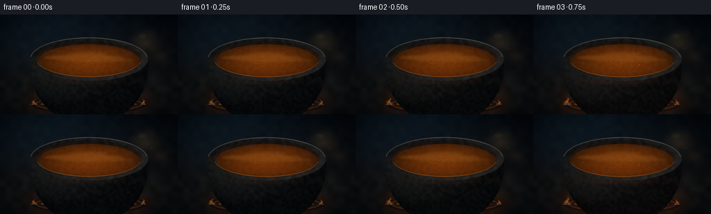
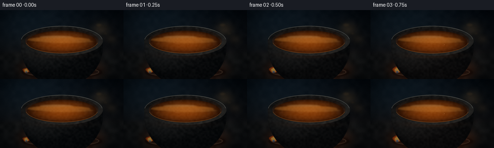
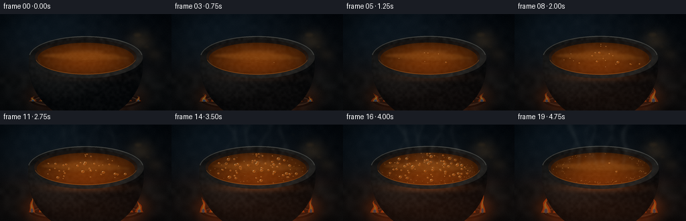
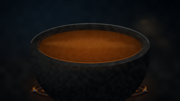
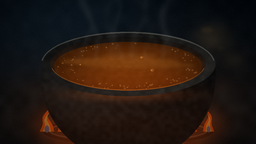
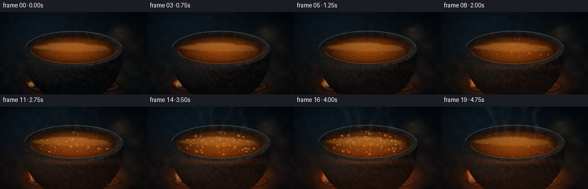
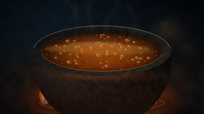
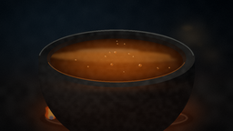
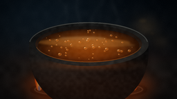

CODING AGENTS AS PIXEL WORLD MODELS
traex/DeepSeek-V4.1-Flash · phygen_110
点击播放 · 原生 RGB 像素
逐轮保存的候选
回放视频、检查图与代码变化。
每份候选均可单独播放。实际图片检查记录在下方工具轨迹中。
候选 01播放与检查图
点击播放 · 原生 RGB 像素


展开代码变化
--- 上一保存版本
+++ 本次保存版本
@@ -0,0 +1,487 @@
+from pathlib import Path
+
+import numpy as np
+from PIL import Image, ImageDraw, ImageFilter
+
+import artifact_io
+
+
+WIDTH = 256
+HEIGHT = 144
+FRAMES = 20
+FPS = 4.0
+SS = 4
+W = WIDTH * SS
+H = HEIGHT * SS
+
+
+def smoothstep(edge0, edge1, value):
+ x = np.clip((value - edge0) / (edge1 - edge0), 0.0, 1.0)
+ return x * x * (3.0 - 2.0 * x)
+
+
+def lerp(a, b, amount):
+ return a + (b - a) * amount
+
+
+def rgba_array(image):
+ return np.asarray(image.convert("RGBA"), dtype=np.float32)
+
+
+def composite_rgba(base, overlay):
+ """Alpha-composite a float RGBA image over a float RGB image."""
+ alpha = overlay[..., 3:4] / 255.0
+ return base * (1.0 - alpha) + overlay[..., :3] * alpha
+
+
+def soft_noise(seed, size=(W, H), low=(24, 14)):
+ rng = np.random.default_rng(seed)
+ small = rng.random((low[1], low[0]))
+ image = Image.fromarray((small * 255.0).astype(np.uint8))
+ image = image.resize(size, Image.Resampling.BICUBIC)
+ return np.asarray(image, dtype=np.float32) / 255.0
+
+
+def ellipse_mask(cx, cy, rx, ry):
+ yy, xx = np.mgrid[0:H, 0:W]
+ return ((xx - cx) / rx) ** 2 + ((yy - cy) / ry) ** 2 <= 1.0
+
+
+def paste_rgba(base, layer):
+ return composite_rgba(base, rgba_array(layer))
+
+
+def make_background(t, heat, flicker, noise):
+ yy, xx = np.mgrid[0:H, 0:W].astype(np.float32)
+ y = yy / (H - 1.0)
+ x = xx / (W - 1.0)
+
+ top = np.array([8.0, 13.0, 18.0], dtype=np.float32)
+ bottom = np.array([23.0, 20.0, 18.0], dtype=np.float32)
+ image = top[None, None, :] * (1.0 - y[..., None]) + bottom[None, None, :] * y[..., None]
+
+ # Cool kitchen light from the upper left.
+ cool = np.exp(-(((x - 0.16) / 0.43) ** 2 + ((y - 0.10) / 0.46) ** 2))
+ image += cool[..., None] * np.array([9.0, 17.0, 22.0], dtype=np.float32)
+
+ # The burner adds an increasingly strong pool of warm light.
+ warm = np.exp(-(((x - 0.50) / 0.43) ** 2 + ((y - 0.88) / 0.28) ** 2))
+ image += warm[..., None] * np.array([78.0, 28.0, 5.0], dtype=np.float32) * (0.20 + 0.80 * heat)
+
+ # Very soft out-of-focus shapes keep the background from reading as a flat wall.
+ bokeh = np.exp(-(((x - 0.82) / 0.07) ** 2 + ((y - 0.27) / 0.10) ** 2))
+ bokeh += 0.55 * np.exp(-(((x - 0.90) / 0.05) ** 2 + ((y - 0.42) / 0.07) ** 2))
+ image += bokeh[..., None] * np.array([34.0, 24.0, 12.0], dtype=np.float32)
+
+ # Brushed dark steel worktop.
+ steel = smoothstep(0.57, 0.67, y)
+ brushed = (noise - 0.5) * 9.0
+ image = image * (1.0 - steel[..., None]) + (
+ np.array([24.0, 24.0, 23.0], dtype=np.float32)[None, None, :]
+ + brushed[..., None]
+ + np.array([20.0, 8.0, 2.0], dtype=np.float32)[None, None, :] * warm[..., None] * heat
+ ) * steel[..., None]
+
+ image += (noise[..., None] - 0.5) * 6.0
+ return np.clip(image, 0.0, 255.0)
+
+
+def add_wall_details(image, t):
+ layer = Image.new("RGBA", (W, H), (0, 0, 0, 0))
+ draw = ImageDraw.Draw(layer)
+
+ # Sparse, low-contrast tile joints, intentionally shallow focus.
+ for x in range(-80, W + 120, 150):
+ draw.line((x, 0, x - 18, int(0.57 * H)), fill=(104, 121, 126, 24), width=2)
+ for y in (58, 170, 282):
+ draw.line((0, y, W, y - 10), fill=(93, 108, 112, 18), width=2)
+
+ # A few warm practical-light reflections on the rear wall.
+ for i, (cx, cy, rx, ry, alpha) in enumerate(
+ ((820, 124, 28, 15, 20), (875, 196, 17, 9, 16), (722, 66, 11, 7, 12))
+ ):
+ pulse = 1.0 + 0.06 * np.sin(t * 7.0 + i * 1.7)
+ draw.ellipse(
+ (cx - rx * pulse, cy - ry * pulse, cx + rx * pulse, cy + ry * pulse),
+ fill=(255, 180, 82, alpha),
+ )
+
+ layer = layer.filter(ImageFilter.GaussianBlur(7))
+ return paste_rgba(image, layer)
+
+
+def draw_flame(draw, cx, base_y, height, width, phase, heat, alpha=220):
+ points = []
+ steps = 18
+ for i in range(steps + 1):
+ v = i / steps
+ taper = (1.0 - v) ** 1.35
+ sway = np.sin(v * 8.0 + phase) * width * 0.22 * v
+ points.append((cx - width * 0.5 * taper + sway, base_y - height * v))
+ for i in range(steps, -1, -1):
+ v = i / steps
+ taper = (1.0 - v) ** 1.35
+ sway = np.sin(v * 8.0 + phase) * width * 0.22 * v
+ points.append((cx + width * 0.5 * taper + sway, base_y - height * v))
+
+ draw.polygon(points, fill=(255, 82, 10, int(alpha * (0.55 + 0.45 * heat))))
+
+ inner = []
+ for i in range(steps + 1):
+ v = i / steps
+ taper = (1.0 - v) ** 1.55
+ sway = np.sin(v * 8.0 + phase) * width * 0.16 * v
+ inner.append((cx - width * 0.27 * taper + sway, base_y - height * 0.82 * v))
+ for i in range(steps, -1, -1):
+ v = i / steps
+ taper = (1.0 - v) ** 1.55
+ sway = np.sin(v * 8.0 + phase) * width * 0.16 * v
+ inner.append((cx + width * 0.27 * taper + sway, base_y - height * 0.82 * v))
+ draw.polygon(inner, fill=(255, 211, 84, int(alpha * 0.92)))
+
+ core_w = width * 0.30
+ draw.ellipse(
+ (cx - core_w * 0.5, base_y - height * 0.22, cx + core_w * 0.5, base_y + height * 0.04),
+ fill=(72, 153, 255, int(alpha * 0.72)),
+ )
+
+
+def add_stove_and_fire(image, t, heat, flicker):
+ layer = Image.new("RGBA", (W, H), (0, 0, 0, 0))
+ draw = ImageDraw.Draw(layer)
+
+ # Cast-iron burner ring and a restrained pool of reflected firelight.
+ ring_y = int(H * 0.88)
+ draw.ellipse((180, ring_y - 44, W - 180, ring_y + 68), fill=(9, 9, 9, 235))
+ draw.ellipse((202, ring_y - 36, W - 202, ring_y + 56), outline=(62, 56, 49, 230), width=9)
+ draw.ellipse((218, ring_y - 30, W - 218, ring_y + 49), outline=(19, 19, 19, 255), width=13)
+
+ for i in range(11):
+ base_x = 196 + i * 63
+ phase = i * 0.9 + t * 13.0
+ height = (56 + 30 * (0.5 + 0.5 * np.sin(phase))) * (0.45 + 0.85 * heat)
+ width = 45 + 11 * np.sin(i * 1.7 + t * 8.0)
+ draw_flame(draw, base_x, ring_y + 14, height, width, phase, heat, alpha=185)
+
+ layer = paste_rgba(image, layer)
+
+ # Soft bloom around the burner.
+ glow = Image.new("RGBA", (W, H), (0, 0, 0, 0))
+ gd = ImageDraw.Draw(glow)
+ glow_alpha = int(30 + 68 * heat * flicker)
+ gd.ellipse((110, H * 0.65, W - 110, H * 1.08), fill=(255, 91, 16, glow_alpha))
+ glow = glow.filter(ImageFilter.GaussianBlur(42))
+ return paste_rgba(layer, glow)
+
+
+def cauldron_masks():
+ yy, xx = np.mgrid[0:H, 0:W]
+ cx = W * 0.5
+ rim_cy = H * 0.445
+ rim_rx = W * 0.333
+ rim_ry = H * 0.219
+ inner_rx = W * 0.296
+ inner_ry = H * 0.182
+ oil_rx = W * 0.282
+ oil_ry = H * 0.164
+ oil_cy = rim_cy + H * 0.015
+
+ body_center_y = H * 0.53
+ body_rx = W * 0.333
+ body_ry = H * 0.575
+ body = ((xx - cx) / body_rx) ** 2 + ((yy - body_center_y) / body_ry) ** 2 <= 1.0
+ body &= yy >= rim_cy
+
+ rim_outer = ((xx - cx) / rim_rx) ** 2 + ((yy - rim_cy) / rim_ry) ** 2 <= 1.0
+ rim_inner = ((xx - cx) / inner_rx) ** 2 + ((yy - rim_cy) / inner_ry) ** 2 <= 1.0
+ rim = rim_outer & ~rim_inner
+
+ inner = rim_inner
+ oil = ((xx - cx) / oil_rx) ** 2 + ((yy - oil_cy) / oil_ry) ** 2 <= 1.0
+ return body, rim, inner, oil, (cx, rim_cy, rim_rx, rim_ry, inner_rx, inner_ry, oil_cy, oil_rx, oil_ry)
+
+
+def add_cauldron(image, t, heat, flicker, noise, masks):
+ body, rim, inner, oil, geom = masks
+ cx, rim_cy, rim_rx, rim_ry, inner_rx, inner_ry, oil_cy, oil_rx, oil_ry = geom
+ yy, xx = np.mgrid[0:H, 0:W].astype(np.float32)
+
+ # Volumetric body shading with a cool upper-left key and firelight from below.
+ nx = np.clip((xx - cx) / (W * 0.34), -1.0, 1.0)
+ ny = np.clip((yy - H * 0.50) / (H * 0.54), -1.0, 1.0)
+ nz = np.sqrt(np.clip(1.0 - nx * nx - ny * ny, 0.0, 1.0))
+ diffuse = np.clip(-0.52 * nx - 0.62 * ny + 0.64 * nz, 0.0, 1.0)
+ body_rgb = np.array([27.0, 27.0, 26.0], dtype=np.float32)
+ body_rgb = body_rgb[None, None, :] * (0.40 + 0.88 * diffuse[..., None])
+ body_rgb += np.array([20.0, 9.0, 3.0], dtype=np.float32)[None, None, :] * np.clip((yy / H - 0.40) * 1.8, 0.0, 1.0)[..., None] * heat
+ body_rgb += (noise[..., None] - 0.5) * 10.0
+ image = np.where(body[..., None], body_rgb, image)
+
+ # Curved cast-iron bands catch small highlights and describe the pot's volume.
+ body_layer = Image.new("RGBA", (W, H), (0, 0, 0, 0))
+ bd = ImageDraw.Draw(body_layer)
+ for i, dy in enumerate((32, 78, 126, 178, 230)):
+ a = int(22 - i * 2)
+ bd.arc(
+ (cx - rim_rx + 20, rim_cy + dy - 32, cx + rim_rx - 20, rim_cy + dy + 62),
+ 12,
+ 168,
+ fill=(124, 111, 94, max(a, 8)),
+ width=3,
+ )
+ body_layer = body_layer.filter(ImageFilter.GaussianBlur(1.5))
+ body_arr = rgba_array(body_layer)
+ body_arr[..., 3] *= body.astype(np.float32)
+ image = composite_rgba(image, body_arr)
+
+ # Warm reflected light on the lower lip of the vessel.
+ rim_light = np.exp(-(((xx - cx) / (W * 0.21)) ** 2 + ((yy - (rim_cy + rim_ry * 0.94)) / (H * 0.045)) ** 2))
+ image += rim_light[..., None] * np.array([58.0, 24.0, 5.0], dtype=np.float32) * (0.22 + 0.78 * heat)
+
+ # Dark inner wall, with a narrow warm band reflected from the oil.
+ wall_rgb = np.broadcast_to(
+ np.array([24.0, 20.0, 17.0], dtype=np.float32)[None, None, :],
+ (H, W, 3),
+ ).copy()
+ wall_rgb += (noise[..., None] - 0.5) * 8.0
+ wall_rgb += np.array([44.0, 18.0, 3.0], dtype=np.float32)[None, None, :] * np.clip(
+ (yy - (rim_cy - inner_ry)) / (inner_ry * 2.0), 0.0, 1.0
+ )[..., None]
+ image = np.where((inner & ~oil)[..., None], wall_rgb, image)
+
+ # Thick cast-iron rim.
+ angle = np.arctan2((yy - rim_cy) / rim_ry, (xx - cx) / rim_rx)
+ rim_rgb = np.broadcast_to(
+ np.array([39.0, 37.0, 34.0], dtype=np.float32)[None, None, :],
+ (H, W, 3),
+ ).copy()
+ rim_rgb *= (0.62 + 0.46 * (0.5 + 0.5 * np.sin(angle + 0.8)))[..., None]
+ rim_rgb += (noise[..., None] - 0.5) * 13.0
+ image = np.where(rim[..., None], rim_rgb, image)
+
+ # Oil body: deeper umber at the edge, luminous amber toward the center.
+ q = ((xx - cx) / oil_rx) ** 2 + ((yy - oil_cy) / oil_ry) ** 2
+ depth = np.clip(1.0 - q, 0.0, 1.0)
+ oil_rgb = (
+ np.array([39.0, 19.0, 4.0], dtype=np.float32)[None, None, :] * (1.0 - 0.62 * depth[..., None])
+ + np.array([103.0, 47.0, 7.0], dtype=np.float32)[None, None, :] * (0.32 + 0.68 * depth[..., None])
+ )
+ oil_rgb += np.array([35.0, 12.0, 1.0], dtype=np.float32)[None, None, :] * np.clip(
+ (yy - oil_cy) / oil_ry, 0.0, 1.0
+ )[..., None] * (0.35 + 0.65 * heat)
+ oil_rgb += (noise[..., None] - 0.5) * 7.0
+ image = np.where(oil[..., None], oil_rgb, image)
+
+ # Soft reflections are painted on a separate layer and clipped to the oil.
+ reflection = Image.new("RGBA", (W, H), (0, 0, 0, 0))
+ rd = ImageDraw.Draw(reflection)
+ drift = np.sin(t * 2.4)
+ rd.ellipse((238, 228, 716, 268), fill=(246, 163, 68, 38))
+ rd.ellipse((320, 246, 782, 278), fill=(255, 193, 91, 26))
+ rd.ellipse((270, 283, 682, 313), fill=(115, 59, 13, 28))
+ rd.ellipse((388 + drift * 12, 210, 635 + drift * 9, 230), fill=(225, 188, 120, 20))
+ reflection = reflection.filter(ImageFilter.GaussianBlur(7))
+ reflection_arr = rgba_array(reflection)
+ reflection_arr[..., 3] *= oil.astype(np.float32)
+ image = composite_rgba(image, reflection_arr)
+
+ # Ripples: a handful of low-contrast elliptical contours moving outward.
+ ripple = Image.new("RGBA", (W, H), (0, 0, 0, 0))
+ rdraw = ImageDraw.Draw(ripple)
+ for i in range(6):
+ phase = (t * 2.0 + i * 0.19) % 1.0
+ rx = 28 + phase * 118
+ ry = 9 + phase * 37
+ ox = cx + np.sin(i * 2.1 + t * 3.0) * 46
+ oy = oil_cy + np.cos(i * 1.4 + t * 2.0) * 12
+ alpha = int(25 * (1.0 - phase))
+ rdraw.ellipse((ox - rx, oy - ry, ox + rx, oy + ry), outline=(255, 185, 87, alpha), width=3)
+ ripple = ripple.filter(ImageFilter.GaussianBlur(1.2))
+ ripple_arr = rgba_array(ripple)
+ ripple_arr[..., 3] *= oil.astype(np.float32)
+ image = composite_rgba(image, ripple_arr)
+
+ # A crisp highlight on the near rim, then the upper-left cool rim light.
+ highlight = Image.new("RGBA", (W, H), (0, 0, 0, 0))
+ hd = ImageDraw.Draw(highlight)
+ hd.arc(
+ (cx - rim_rx + 2, rim_cy - rim_ry + 2, cx + rim_rx - 2, rim_cy + rim_ry - 2),
+ 186,
+ 354,
+ fill=(162, 173, 170, 88),
+ width=5,
+ )
+ hd.arc(
+ (cx - inner_rx + 1, rim_cy - inner_ry + 1, cx + inner_rx - 1, rim_cy + inner_ry - 1),
+ 10,
+ 170,
+ fill=(255, 151, 56, 78),
+ width=4,
+ )
+ image = paste_rgba(image, highlight)
+ return image
+
+
+def add_bubbles(image, t, heat, masks, frame_index):
+ _, _, _, oil, geom = masks
+ cx, _, _, _, _, _, oil_cy, oil_rx, oil_ry = geom
+ layer = Image.new("RGBA", (W, H), (0, 0, 0, 0))
+ draw = ImageDraw.Draw(layer)
+ rng = np.random.default_rng(8517)
+
+ count = 92
+ for i in range(count):
+ birth = 0.13 + 0.78 * (i / count) ** 0.70
+ if t < birth:
+ continue
+ age = np.clip((t - birth) / max(0.12, 1.0 - birth), 0.0, 1.0)
+ if age > 0.94:
+ continue
+
+ theta = rng.uniform(0.0, 2.0 * np.pi)
+ radius = np.sqrt(rng.uniform(0.0, 0.76))
+ bx = cx + np.cos(theta) * oil_rx * radius
+ by = oil_cy + np.sin(theta) * oil_ry * radius
+ bx += np.sin(age * np.pi * 1.3 + i) * 5.0
+ by -= age * 7.0
+ base = rng.uniform(3.0, 10.5) * (0.72 + 0.38 * heat)
+ pop = np.sin(np.pi * age) ** 0.55
+ radius_px = base * pop
+ if radius_px < 1.1:
+ continue
+
+ # Warm meniscus and a tiny off-center glint make the bubbles read as liquid.
+ draw.ellipse(
+ (bx - radius_px * 1.15, by - radius_px * 0.90, bx + radius_px * 1.15, by + radius_px * 0.90),
+ fill=(50, 25, 7, 118),
+ )
+ draw.ellipse(
+ (bx - radius_px, by - radius_px * 0.77, bx + radius_px, by + radius_px * 0.77),
+ fill=(177, 88, 21, 150),
+ outline=(246, 171, 82, 122),
+ width=max(1, int(radius_px * 0.24)),
+ )
+ glint = max(0.9, radius_px * 0.28)
+ draw.ellipse(
+ (bx - radius_px * 0.38 - glint, by - radius_px * 0.36 - glint * 0.6,
+ bx - radius_px * 0.38 + glint, by - radius_px * 0.36 + glint * 0.6),
+ fill=(255, 226, 171, 172),
+ )
+
+ if age > 0.63 and radius_px > 4.0:
+ draw.arc(
+ (bx - radius_px * 1.7, by - radius_px * 1.15, bx + radius_px * 1.7, by + radius_px * 1.15),
+ 190,
+ 350,
+ fill=(255, 181, 91, 42),
+ width=2,
+ )
+
+ # Fine foam accumulates around the hottest region late in the clip.
+ foam_count = int(85 * smoothstep(0.56, 1.0, t))
+ rng2 = np.random.default_rng(4301 + frame_index)
+ for i in range(foam_count):
+ angle = rng2.uniform(0.0, 2.0 * np.pi)
+ rr = np.sqrt(rng2.uniform(0.55, 0.94))
+ fx = cx + np.cos(angle) * oil_rx * rr
+ fy = oil_cy + np.sin(angle) * oil_ry * rr
+ rad = rng2.uniform(1.2, 3.5)
+ draw.ellipse((fx - rad, fy - rad * 0.7, fx + rad, fy + rad * 0.7), fill=(255, 193, 108, 62))
+
+ arr = rgba_array(layer)
+ arr[..., 3] *= oil.astype(np.float32)
+ return composite_rgba(image, arr)
+
+
+def add_steam(image, t, heat):
+ amount = smoothstep(0.30, 0.92, t)
+ if amount <= 0.01:
+ return image
+
+ layer = Image.new("RGBA", (W, H), (0, 0, 0, 0))
+ draw = ImageDraw.Draw(layer)
+ wisps = 8
+ for i in range(wisps):
+ x0 = W * (0.30 + 0.40 * (i + 0.5) / wisps)
+ phase = i * 1.37
+ points = []
+ y_start = int(H * 0.43)
+ y_end = int(-20 - 30 * (i % 3))
+ for j in range(35):
+ v = j / 34.0
+ y = lerp(y_start, y_end, v)
+ x = (
+ x0
+ + np.sin(v * 6.2 + phase + t * 4.8) * (9.0 + 25.0 * v)
+ + (v ** 1.7) * 46.0 * (1 if i % 2 == 0 else -1)
+ )
+ points.append((x, y))
+ alpha = int((10 + 20 * amount) * (0.68 + 0.32 * np.sin(i * 2.3)))
+ width = int(9 + 9 * amount + (i % 3) * 2)
+ draw.line(points, fill=(214, 224, 219, alpha), width=width, joint="curve")
+
+ layer = layer.filter(ImageFilter.GaussianBlur(10))
+ return paste_rgba(image, layer)
+
+
+def finish_frame(image, t, heat, flicker, frame_index):
+ yy, xx = np.mgrid[0:H, 0:W].astype(np.float32)
+ nx = (xx - W * 0.5) / (W * 0.57)
+ ny = (yy - H * 0.48) / (H * 0.65)
+ vignette = np.clip(1.0 - 0.52 * (nx * nx + ny * ny) ** 1.18, 0.43, 1.0)
+ image *= vignette[..., None]
+
+ # Subtle warm firelight lift in the lower half.
+ warm = np.exp(-(((xx - W * 0.5) / (W * 0.46)) ** 2 + ((yy - H * 0.84) / (H * 0.22)) ** 2))
+ image += warm[..., None] * np.array([15.0, 5.0, 1.0], dtype=np.float32) * heat * flicker
+
+ # Gentle filmic contrast and slightly cool shadows.
+ image = np.clip(image, 0.0, 255.0)
+ image = 255.0 * np.power(image / 255.0, 1.055)
+ shadow_lift = np.clip((60.0 - image.mean(axis=2)) / 60.0, 0.0, 1.0)
+ image += shadow_lift[..., None] * np.array([-1.0, 1.0, 3.0], dtype=np.float32)
+
+ rng = np.random.default_rng(9200 + frame_index)
+ grain = rng.normal(0.0, 2.2, (H, W, 1)).astype(np.float32)
+ image = np.clip(image + grain, 0.0, 255.0)
+ return image.astype(np.uint8)
+
+
+def render_frame(frame_index, masks):
+ t = frame_index / (FRAMES - 1)
+ # The heating curve is deliberately compressed to sell a rapid timelapse.
+ heat = smoothstep(0.02, 0.82, t) ** 0.72
+ flicker = 0.92 + 0.08 * np.sin(t * 39.0 + 0.8) + 0.035 * np.sin(t * 71.0 + 1.7)
+ noise = soft_noise(4100, low=(32, 18))
+ detail_noise = soft_noise(7300, low=(72, 40))
+
+ image = make_background(t, heat, flicker, noise)
+ image = add_wall_details(image, t)
+ image = add_stove_and_fire(image, t, heat, flicker)
+ image = add_cauldron(image, t, heat, flicker, detail_noise, masks)
+ image = add_bubbles(image, t, heat, masks, frame_index)
+ image = add_steam(image, t, heat)
+ image = finish_frame(image, t, heat, flicker, frame_index)
+
+ rendered = Image.fromarray(image)
+ # A very slow push-in keeps the shot alive without moving the object.
+ zoom = 1.0 + 0.026 * t
+ crop_w = int(W / zoom)
+ crop_h = int(H / zoom)
+ left = (W - crop_w) // 2
+ top = int((H - crop_h) * 0.57)
+ rendered = rendered.crop((left, top, left + crop_w, top + crop_h))
+ rendered = rendered.resize((WIDTH, HEIGHT), Image.Resampling.LANCZOS)
+ return np.asarray(rendered, dtype=np.uint8)
+
+
+def main():
+ case_dir = Path(__file__).resolve().parent
+ masks = cauldron_masks()
+ frames = np.stack([render_frame(i, masks) for i in range(FRAMES)])
+ artifact_io.save(frames, case_dir)
+ print(f"saved {frames.shape} RGB frames to {case_dir}")
+
+
+if __name__ == "__main__":
+ main()
候选 02播放与检查图
点击播放 · 原生 RGB 像素


展开代码变化
--- 上一保存版本
+++ 本次保存版本
@@ -115,34 +115,34 @@
steps = 18
for i in range(steps + 1):
v = i / steps
- taper = (1.0 - v) ** 1.35
- sway = np.sin(v * 8.0 + phase) * width * 0.22 * v
+ taper = np.sin(np.pi * (0.08 + 0.92 * v)) ** 0.54
+ sway = np.sin(v * 7.0 + phase) * width * 0.19 * v
points.append((cx - width * 0.5 * taper + sway, base_y - height * v))
for i in range(steps, -1, -1):
v = i / steps
- taper = (1.0 - v) ** 1.35
- sway = np.sin(v * 8.0 + phase) * width * 0.22 * v
+ taper = np.sin(np.pi * (0.08 + 0.92 * v)) ** 0.54
+ sway = np.sin(v * 7.0 + phase) * width * 0.19 * v
points.append((cx + width * 0.5 * taper + sway, base_y - height * v))
- draw.polygon(points, fill=(255, 82, 10, int(alpha * (0.55 + 0.45 * heat))))
+ draw.polygon(points, fill=(255, 88, 12, int(alpha * (0.52 + 0.48 * heat))))
inner = []
for i in range(steps + 1):
v = i / steps
- taper = (1.0 - v) ** 1.55
- sway = np.sin(v * 8.0 + phase) * width * 0.16 * v
+ taper = np.sin(np.pi * (0.13 + 0.87 * v)) ** 0.62
+ sway = np.sin(v * 7.0 + phase) * width * 0.13 * v
inner.append((cx - width * 0.27 * taper + sway, base_y - height * 0.82 * v))
for i in range(steps, -1, -1):
v = i / steps
- taper = (1.0 - v) ** 1.55
- sway = np.sin(v * 8.0 + phase) * width * 0.16 * v
+ taper = np.sin(np.pi * (0.13 + 0.87 * v)) ** 0.62
+ sway = np.sin(v * 7.0 + phase) * width * 0.13 * v
inner.append((cx + width * 0.27 * taper + sway, base_y - height * 0.82 * v))
- draw.polygon(inner, fill=(255, 211, 84, int(alpha * 0.92)))
-
- core_w = width * 0.30
+ draw.polygon(inner, fill=(255, 216, 100, int(alpha * 0.82)))
+
+ core_w = width * 0.26
draw.ellipse(
(cx - core_w * 0.5, base_y - height * 0.22, cx + core_w * 0.5, base_y + height * 0.04),
- fill=(72, 153, 255, int(alpha * 0.72)),
+ fill=(72, 143, 235, int(alpha * 0.58)),
)
@@ -156,14 +156,16 @@
draw.ellipse((202, ring_y - 36, W - 202, ring_y + 56), outline=(62, 56, 49, 230), width=9)
draw.ellipse((218, ring_y - 30, W - 218, ring_y + 49), outline=(19, 19, 19, 255), width=13)
- for i in range(11):
- base_x = 196 + i * 63
- phase = i * 0.9 + t * 13.0
- height = (56 + 30 * (0.5 + 0.5 * np.sin(phase))) * (0.45 + 0.85 * heat)
- width = 45 + 11 * np.sin(i * 1.7 + t * 8.0)
- draw_flame(draw, base_x, ring_y + 14, height, width, phase, heat, alpha=185)
-
- layer = paste_rgba(image, layer)
+ for i in range(7):
+ base_x = 218 + i * 90 + 13 * np.sin(i * 1.9 + t * 2.5)
+ phase = i * 1.1 + t * 12.0
+ height = (61 + 36 * (0.5 + 0.5 * np.sin(phase))) * (0.48 + 0.82 * heat)
+ width = 56 + 15 * np.sin(i * 1.7 + t * 8.0)
+ draw_flame(draw, base_x, ring_y + 14, height, width, phase, heat, alpha=168)
+
+ glow_flames = layer.filter(ImageFilter.GaussianBlur(7))
+ image = paste_rgba(image, glow_flames)
+ image = paste_rgba(image, layer.filter(ImageFilter.GaussianBlur(1.2)))
# Soft bloom around the burner.
glow = Image.new("RGBA", (W, H), (0, 0, 0, 0))
@@ -171,7 +173,7 @@
glow_alpha = int(30 + 68 * heat * flicker)
gd.ellipse((110, H * 0.65, W - 110, H * 1.08), fill=(255, 91, 16, glow_alpha))
glow = glow.filter(ImageFilter.GaussianBlur(42))
- return paste_rgba(layer, glow)
+ return paste_rgba(image, glow)
def cauldron_masks():
@@ -263,24 +265,24 @@
q = ((xx - cx) / oil_rx) ** 2 + ((yy - oil_cy) / oil_ry) ** 2
depth = np.clip(1.0 - q, 0.0, 1.0)
oil_rgb = (
- np.array([39.0, 19.0, 4.0], dtype=np.float32)[None, None, :] * (1.0 - 0.62 * depth[..., None])
- + np.array([103.0, 47.0, 7.0], dtype=np.float32)[None, None, :] * (0.32 + 0.68 * depth[..., None])
+ np.array([47.0, 20.0, 4.0], dtype=np.float32)[None, None, :]
+ + np.array([101.0, 50.0, 8.0], dtype=np.float32)[None, None, :] * depth[..., None]
)
- oil_rgb += np.array([35.0, 12.0, 1.0], dtype=np.float32)[None, None, :] * np.clip(
+ oil_rgb += np.array([29.0, 10.0, 1.0], dtype=np.float32)[None, None, :] * np.clip(
(yy - oil_cy) / oil_ry, 0.0, 1.0
)[..., None] * (0.35 + 0.65 * heat)
- oil_rgb += (noise[..., None] - 0.5) * 7.0
+ oil_rgb += (noise[..., None] - 0.5) * 8.0
image = np.where(oil[..., None], oil_rgb, image)
# Soft reflections are painted on a separate layer and clipped to the oil.
reflection = Image.new("RGBA", (W, H), (0, 0, 0, 0))
rd = ImageDraw.Draw(reflection)
drift = np.sin(t * 2.4)
- rd.ellipse((238, 228, 716, 268), fill=(246, 163, 68, 38))
- rd.ellipse((320, 246, 782, 278), fill=(255, 193, 91, 26))
- rd.ellipse((270, 283, 682, 313), fill=(115, 59, 13, 28))
- rd.ellipse((388 + drift * 12, 210, 635 + drift * 9, 230), fill=(225, 188, 120, 20))
- reflection = reflection.filter(ImageFilter.GaussianBlur(7))
+ rd.ellipse((212, 220, 752, 272), fill=(255, 177, 77, 66))
+ rd.ellipse((320, 246, 782, 278), fill=(255, 202, 111, 42))
+ rd.ellipse((270, 283, 682, 313), fill=(107, 49, 8, 42))
+ rd.ellipse((330 + drift * 12, 210, 604 + drift * 9, 232), fill=(255, 222, 157, 62))
+ reflection = reflection.filter(ImageFilter.GaussianBlur(6))
reflection_arr = rgba_array(reflection)
reflection_arr[..., 3] *= oil.astype(np.float32)
image = composite_rgba(image, reflection_arr)
@@ -353,19 +355,19 @@
# Warm meniscus and a tiny off-center glint make the bubbles read as liquid.
draw.ellipse(
(bx - radius_px * 1.15, by - radius_px * 0.90, bx + radius_px * 1.15, by + radius_px * 0.90),
- fill=(50, 25, 7, 118),
+ fill=(66, 31, 7, 82),
)
draw.ellipse(
(bx - radius_px, by - radius_px * 0.77, bx + radius_px, by + radius_px * 0.77),
- fill=(177, 88, 21, 150),
- outline=(246, 171, 82, 122),
+ fill=(199, 103, 26, 142),
+ outline=(255, 188, 98, 88),
width=max(1, int(radius_px * 0.24)),
)
glint = max(0.9, radius_px * 0.28)
draw.ellipse(
(bx - radius_px * 0.38 - glint, by - radius_px * 0.36 - glint * 0.6,
bx - radius_px * 0.38 + glint, by - radius_px * 0.36 + glint * 0.6),
- fill=(255, 226, 171, 172),
+ fill=(255, 231, 185, 180),
)
if age > 0.63 and radius_px > 4.0:
可观测工具轨迹
实际执行的命令与返回图片。
命令 1exit 0
/bin/bash -c "pwd && rg --files -g 'prompt.txt' -g 'GENERATION_RULES.md' -g 'task_spec.json' -g '"'!**/.git/**'"'"
命令 2exit 0
/bin/bash -c "find . -maxdepth 2 -type f -not -path './.git/*' -printf '%p\\n' | sort | head -200"
命令 3exit 0
/bin/bash -c 'cat prompt.txt'
命令 4exit 0
/bin/bash -c 'cat GENERATION_RULES.md'
命令 5exit 0
/bin/bash -c 'cat task_spec.json'
命令 6exit 0
/bin/bash -c "sed -n '1,260p' artifact_io.py"
命令 7exit 0
/bin/bash -c 'git status --short && git log -1 --oneline'
命令 8exit 1
/bin/bash -c 'python generate.py'
命令 9exit 1
/bin/bash -c 'python generate.py'
命令 10exit 0
/bin/bash -c 'python generate.py'
命令 11exit 1
/bin/bash -c 'python generate.py'
命令 12exit 0
/bin/bash -c 'python generate.py'
命令 13exit 0
/bin/bash -c "python - <<'PY'
from PIL import Image
import numpy as np
for i in (0,4,8,12,16,19):
a=np.asarray(Image.open(f'frames/{i:02d}.png'))
print(i, 'mean', np.round(a.mean((0,1)),1), 'oil', np.round(a[58:78,60:196].mean((0,1)),1), 'max', a.max())
PY"命令 14exit 0
/bin/bash -c "cp frames/12.png .tmp/frame12_check.png && ls -lh inspection.png frames/00.png frames/19.png pixels.npz index.html && python - <<'PY'
import json
import numpy as np
from PIL import Image
spec=json.load(open('task_spec.json'))
z=np.load('pixels.npz')['pixels']
print('pixels', z.shape, z.dtype)
print('index', Image.open('frames/00.png').size, Image.open('frames/19.png').size)
print('frame diff 0->19', np.abs(np.asarray(Image.open('frames/00.png'),dtype=np.int16)-np.asarray(Image.open('frames/19.png'),dtype=np.int16)).mean())
PY"命令 15exit 0
/bin/bash -c "python - <<'PY'
import ast
from pathlib import Path
p=Path('generate.py')
ast.parse(p.read_text())
print('generate.py syntax OK')
print('python files:', [x.name for x in Path('.').glob('*.py')])
PY"命令 16exit 0
/bin/bash -c 'git status --short -- generate.py frames inspection.png transition_check.png pixels.npz index.html task_spec.json'
命令 17exit 0
/bin/bash -c 'git check-ignore -v frames/00.png inspection.png pixels.npz index.html generate.py || true && find frames -maxdepth 1 -type f | wc -l'
视觉工具实际返回图片 1

视觉工具实际返回图片 2

视觉工具实际返回图片 3

视觉工具实际返回图片 4

视觉工具实际返回图片 5

视觉工具实际返回图片 6

视觉工具实际返回图片 7

视觉工具实际返回图片 8

保存候选 2 份；完成命令 17 次；可验证图片返回 8 张。原始 API 响应与完整日志保留在本地。